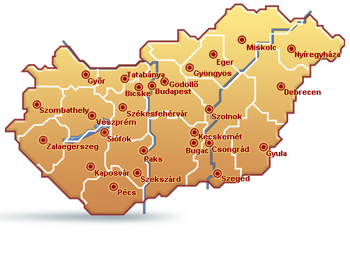

EGYHÁZI 1 %
Támogasd az élő buddhizmust!
Technikai számunk: 0042
A Gyémánt Út Buddhista Közösség a tibeti buddhizmus Karma Kagyü vonalát képviseli. A nyugati világban több
mint 700, világi meditációs központot működtetünk. A közösségnek Magyarországon 25 centruma van, melyekben különböző
rendszerességgel tartunk ingyenes, nyilvános meditációkat, tanításokat. A legnagyobb köztük a budapesti, ahol minden
nap este 6 és 9 óra között fogadjuk az érdeklődőket. Nyaranta a becskei elvonulási központunkban nemzetközi meditációs
kurzusokat tartunk. A központok barátságon és idealizmuson alapuló önkéntes munkával működnek, hierarchikus rendszer
nélkül. Közös célunk, hogy Buddha tanításait elérhetővé tegyük mindenki számára, az arra nyitott emberek pedig
minél könnyebben megtaláljanak bennünket. Tevékenységünkben nagyon sokat segítenek az 1 %-ok!
Tovább a Gyémánt Út Közösség honlapjára
Így ajánld fel adód 1+1%-át
ALAPÍTVÁNYI 1%
Támogasd a tibeti kultúra közvetítését!
Adószámunk: 18058462-1-42
Az 1994 óta működő Tibet-Európa Alapítvány támogatásával részese lehetsz a tibeti buddhista értékek megőrzésének
és közvetítésének az európai társadalom számára. Civil szervezetünk aktivitásával hozzájárul az egyetemes kultúra
fennmaradásához, így az emberi műveltség sokszínűségének megtartásához. Az alapítvány célját sokrétű tevékenységgel
érjük el. Az elmúlt évek során az ország számos városában rendeztünk ingyenes ismeretterjesztő előadásokat és kiállításokat,
multimédiás kiadványokat jelentettünk meg, valamint tanulmányi ösztöndíj támogatást nyújtottunk.

Így ajánld fel az SZJA 1+1%-od
Határidő: 2019. május 20.
FONTOS! Eddig a napig minden adózó leadhatja a nyilatkozatát, akármilyen formában vagy határidővel készítette
is el az adóbevallását.
Amennyiben magánszemélyként rendelkezel elektronikus tárhellyel, nyilatkozatodat a legegyszerűbb módon, elektronikus
úton nyújthatod be:
- - az e-SZJA webes felületen az online kitöltő segítségével vagy
- - az ÁNYK keretprogram segítségével a bevallással együtt, annak EGYSZA lapját kitöltve vagy attól elkülönítve
a 18EGYSZA nyomtatvány kitöltésével.
Ha egyénileg küldöd be, akkor a 18EGYSZA jelű nyomtatványt tudod postán, személyesen az ügyfélszolgálaton
vagy elektronikusan, az ÁNyK nyomtatványkitöltő program segítségével beadni. Töltsd le a nyomtatványt! Ezt a PDF-et
kinyomtatva, kézzel tudod kitölteni. Online is kitöltheted az alábbi linken, de ebben az esetben is postán vagy
személyesen tudod majd beadni: https://webnyk.nav.gov.hu
Ne feledd:
Egyházunk technikai száma: 0042
Alapítványunk adószáma: 18058462-1-42
Töltsd ki a nyilatkozatot!
Ezt a PDF-et kinyomtatva, kézzel tudod kitölteni.
Töltsd ki online!
Amennyiben van Ügyfélkapu regisztrációd.

Kapcsolat
Gyémánt Út Buddhista Közösség
Budapest Rózsák tere 4-5.
Tel.: +3620-349-8989
Email: info@buddhizmusma.hu
Központjaink országszerte

Bővebb információ a buddhizmusról
A nyugati karma kagyü, Gyémánt Út buddhista központokat Láma Ole és felesége, Hannah Nydahl alapították a 16.
Karmapa, Rangdzsung Rigpe Dordzse nevében. A 700 nyugati centrum jelenleg a 17. Karmapa, Trinli Táje Dordzse szellemi
vezetése alatt áll. A Gyémánt Út központok Buddha mindennapi életben alkalmazható gyakorlatias tanításait és ügyes
módszereit kí nálják. A meditáción és napi tevékenységeinken keresztül ki tudjuk fejleszteni a tudat benne rejlő
erejét, tisztaságát és időtlen természetét minden lény javára.
Láma Ole Nydahl
Láma Ole Nydahl egyike azon kevés nyugatiaknak, akik a tibeti buddhista hagyomány teljes jogú lámái és meditációs
tanítói. 1969 decemberében feleségével, Hannah-val a 16. Karmapa - a század egyik legnagyobb meditációs mestere
és a tibeti buddhizmus karma kagyü hagyományának vezetője - első nyugati tanítványai lettek. Karmapa nagy hatással
volt életükre. Megkérte Hannah-t és Olét, hogy hozzák el a buddhizmust Nyugatra. Az elmúlt negyven évben megállás
nélkül utaztak, tanítottak és meditációs központokat hoztak létre a világ számos országában.
A karma kagyü vonal
A karma kagyü egyike a legnagyobb tibeti buddhista átadási vonalaknak, amely főként a meditációra helyezi a hangsúlyt,
és képes egy hiteles tanítón keresztül hozzásegíteni bennünket a tudat természetének közvetlen megtapasztalásához.
Ezeket a hatékony módszereket a történelmi Buddha tanította legközelebbi tanítványainak. Ma nagy tibeti tanítók
(tib. lámák), mint a 17. Gyalva Karmapa, Trinli Táje Dordzse, közvetítik ezt a töretlen hagyományt. Karmapa volt
Tibet első tudatosan újraszületett lámája, a XII. század óta a tibeti buddhizmus karma kagyü iskolájának szellemi
vezetője. A jelenlegi, 17. Karmapa 1983-ban született Tibetben, 1994 tavaszán sikerült elmenekülnie Indiába.
Ki Buddha?
A történelmi Sákjamuni Buddha körülbelül 2560 évvel ezelőtt született a mai Nepál területén, királyi család sarjaként.
35 évesen, hat év mély meditáció után felismerte a tudat valódi természetét, és így elérte a megvilágosodást. Az
elkövetkező 45 évben Buddha tehetséges tanítványok ezreinek tanította azokat a módszereket, amelyekkel a megvilágosodás
elérhető.
Mit tanít Buddha?
Hatékony módszereket, melyek a tudat közvetlen megtapasztalásához vezetnek” – mondja Lopön Cecsu Rinpocse, a nagy
meditációs mester, aki segített a tibeti buddhizmust meg alapozni Nyugaton. Buddha tanítása olyan, mint a gyémánt:
természete szerint megváltoztathatatlan, mégis a mögötte lévő dolgok színeiben ragyog. A tanítások így különböző
társadalmak és korok kultúrájához igazodtak, anélkül hogy lényegük elveszett volna. Ezerötszáz éven keresztül Indiában
adták át őket, majd újabb ezer évig Tibetben. Ma a Gyémánt Út buddhizmus határtalan látásmódja és módszerei egyre
népszerűbbek a Nyugat tanult és független emberei körében.
Mit adhatnak Buddha tanításai a modern világnak?
Buddha mindenki számára érthető és az életben kiválóan használható magyarázatokat ad arról, hogy mi a végső valóság,
és mi az, ami feltételekhez kötött. Ezek megértésével tartós boldogságot tapasztalhatunk. A buddhizmus nem ismer
dogmákat, sőt bátorít, hogy tegyünk fel kérdéseket. A megértett információ a megfelelő meditációkon keresztül saját
tapasztalattá válik, a kiegészítő módszerek pedig megszilárdítják az elért tudatszinteket. Buddha tanításainak
célja, hogy teljesen megvalósítsuk a mindenkiben ott rejlő megvilágosodott képességeket.